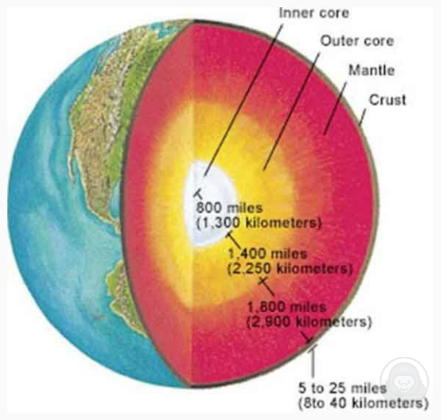

DI #8 · 分类：数据图

✅必说｜开场定题：This image shows information about [主题].
✅必说｜最高值：To begin with, the highest / largest value is [X], at about [数字].
✅必说｜最低值：In contrast, the lowest / smallest value is [Z], at about [数字].
➕选说｜次高值：Besides, the second highest is [Y], at about [数字].
✅必说｜趋势：Meanwhile, there is an increasing / decreasing trend from [起点] to [终点].
✅必说｜总结：In conclusion, this graph clearly shows [主题].
现场快说版：只按模板说方位/步骤 + 物品 + 颜色/数量，不背功能从句；卡壳就补背景（颜色/阳光/草地）。
This image shows information about the structure of the earth. To begin with, the thickest layer is the Mantle, at about 1800 miles. In contrast, the thinnest layer is the Crust, at about 5 to 25 miles. Besides, the Outer Core is about 1400 miles, and the Inner Core is about 800 miles. Meanwhile, the layers go from the crust to the inner core. In conclusion, this graph clearly shows the four layers of the earth.
This image shows the structure of the earth, with four layers. To begin with, the thickest layer is the Mantle, at about 1800 miles. In contrast, the thinnest is the Crust, at only 5 to 25 miles. Besides, the Outer Core is about 1400 miles, and the Inner Core about 800 miles. In conclusion, this graph clearly shows the four layers of the earth.
earth structure / Inner core / Outer core / Mantle / Crust / 800 miles / 1400 miles / 1800 miles / 5 to 25 miles / thickest / thinnest / layers
练习建议：① 先背基础版（现场快说，保底）→ ② 再学进阶版（时间够再补功能从句）→ ③ 脱稿练习（不看原文自己说 3 遍）。